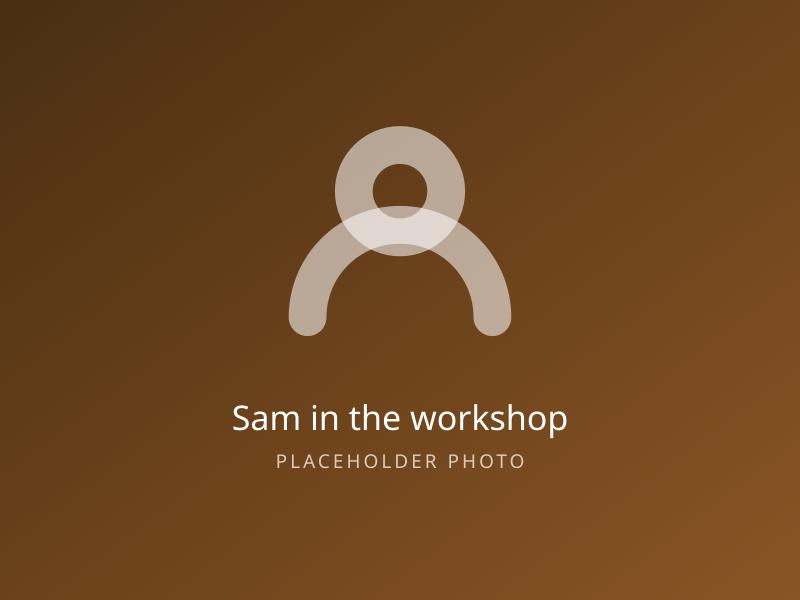

City & Guilds qualified
Level 3 Diploma in Site Carpentry and Architectural Joinery, plus a current CSCS card for site work.
Fifteen years on the tools, a City & Guilds qualification and a van that has been up most streets in Leeds.
Sam served his time with a small Leeds firm doing shopfitting and second-fix carpentry, then spent eight years on domestic work before going out on his own. Everything you see on this site was measured, made and fitted by him.
That is the whole pitch, really. There is no office, no sales team and no commission on materials. The person who quotes the job is the person who does it, which is why the quote tends to be the price you actually pay.
Sam works mainly in Leeds, Bradford, Wakefield and Harrogate, usually on one job at a time so nothing gets left half finished while he chases the next one.

Boring but worth checking before you let anyone loose on your house. Certificates are available on request, and Sam would rather you asked.
Level 3 Diploma in Site Carpentry and Architectural Joinery, plus a current CSCS card for site work.
Fully insured for domestic and commercial work. Certificate emailed with every quote as standard.
Staircases, fire doors and structural openings done to current regulations, with your building control officer kept happy.
FSC-certified stock from local merchants wherever the job and the budget allow it.
Anything under £1,000 is paid on completion. Larger jobs are staged, with materials paid up front and the balance at sign-off.
Filling, sanding and priming are included as standard — you are not left with bare timber and a list of jobs.
Sam is usually on the tools during the day, so an email or the booking form gets the quickest answer. He will call you back the same evening.